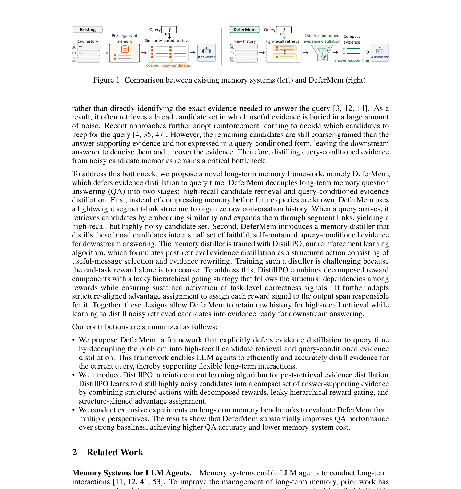
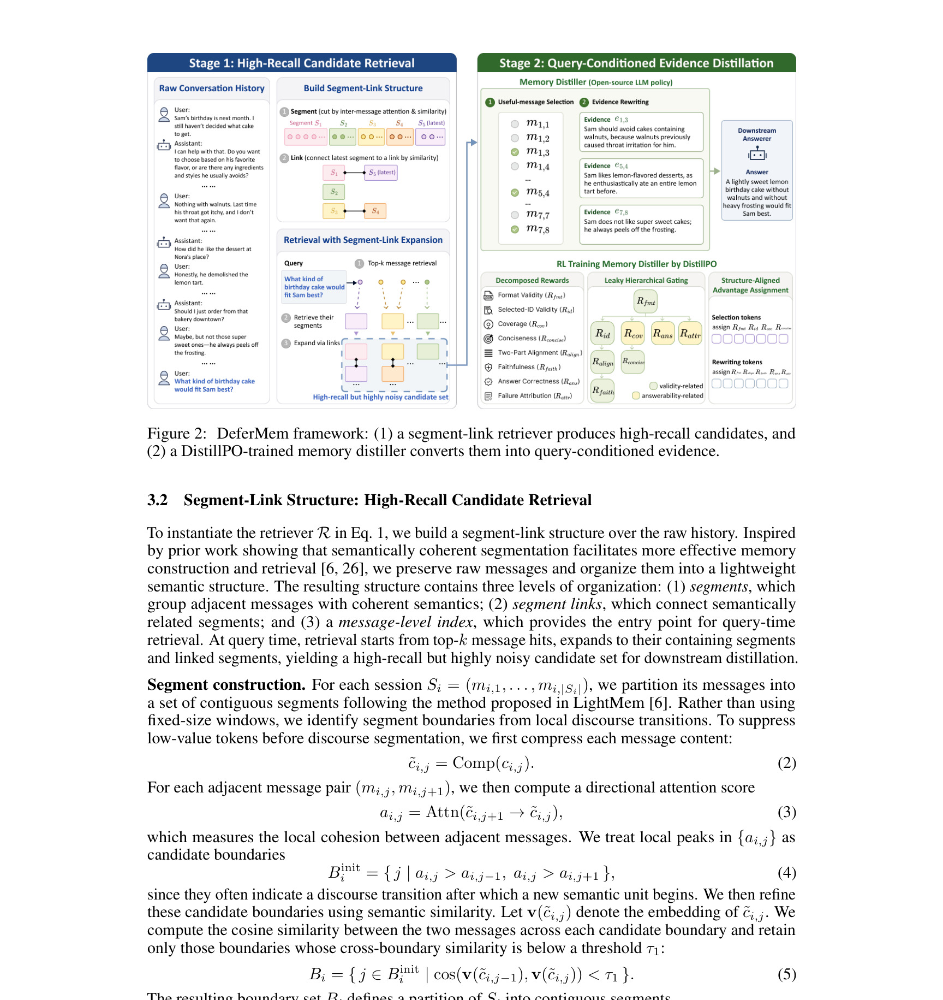
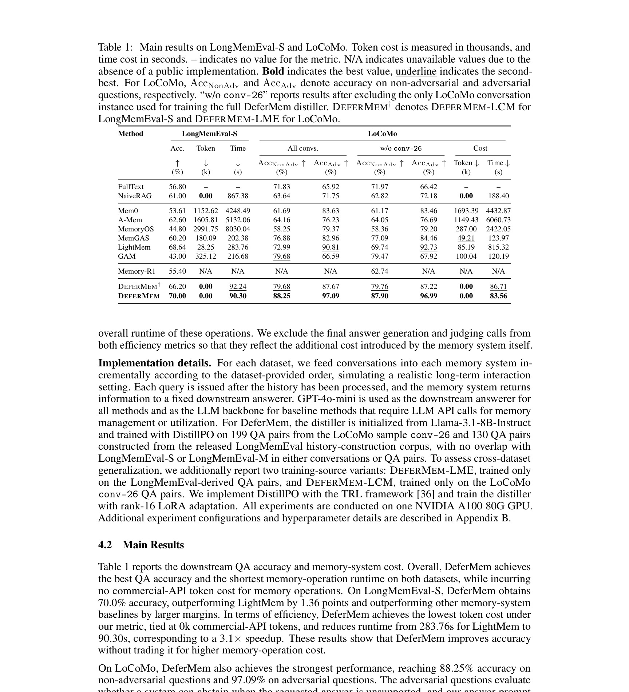

DeferMem：DeferMem: Query-Time Evidence Distillation via Reinforcement Learning for Long-Term Memory QA
这里精读一篇 2026-05-21 公开在 arXiv 的论文《DeferMem: Query-Time Evidence Distillation via Reinforcement Learning for Long-Term Memory QA》。中文可以叫《通过强化学习在查询时蒸馏证据的长期记忆问答》。
论文链接：arXiv:2605.22411 作者：Jianing Yin, Tan Tang 机构/团队：State Key Lab of CAD&CG, Zhejiang University。 公开日期：2026-05-21 submitted；arXiv 2605.22411，来源：arXiv cs.CL / cs.AI / cs.LG。 代码/项目页：arXiv 页面和 PDF 本轮未核验到独立代码仓库。 本地 PDF：多校-DeferMem.pdf。
0. 导读
它把长期记忆系统的关键动作推迟到 query-time：先高召回取候选，再按具体问题蒸馏成自包含证据。对 Agent 长期记忆、个性化 RAG 和推荐用户画像压缩都非常相关。
DeferMem 用 segment-link retriever 组织原始对话历史，在查询到来后取高召回候选；再用 DistillPO 训练 memory distiller，把 noisy candidates 变成 faithful、self-contained、query-conditioned evidence。实验在 LongMemEval-S 与 LoCoMo 上比较 FullText、NaiveRAG、Mem0、A-Mem、MemoryOS、MemGAS、LightMem、GAM、Memory-R1 等基线。
从今天的候选池看，这篇论文的价值不只是提出一个模型名，而是把推荐或大模型系统中的一个真实工程矛盾拆开：模型能力、候选边界、证据质量、推理成本和线上稳定性不能只靠单一指标解释。下面按背景、方法、实验、个人理解和复现建议展开。
1. 背景与问题
长期记忆 QA 的难点不是“有没有历史”，而是证据通常散落在多轮对话、多个 session 和大量无关内容中。传统 memory system 往往在未来问题未知时预先总结或压缩记忆，等问题来了再按 embedding similarity 检索。这会造成两个问题：预压缩可能丢掉未来问题需要的细节，相似度检索也不一定找得到真正答题证据。
DeferMem 选择把关键证据压缩推迟到 query-time。这个设计很符合经验：同一段历史对于不同问题有不同价值。用户曾经说过“我不喜欢太甜”在餐厅推荐里重要，在天气问答里无关；同样一句对话需要在问题出现后才知道是否是证据。
这和推荐系统的长期兴趣建模也高度相关。用户长期历史不能只被压成固定画像，否则会丢失上下文；更好的做法是保存高召回候选记忆，在当前推荐任务或查询下动态抽取证据。

图 1 对比传统 memory systems 与 DeferMem。传统方法通常在未来问题未知时预先压缩记忆，然后用相似度检索；DeferMem 则先保留原始历史结构，等查询出现后再蒸馏证据。这个差别决定了它更适合需要问题条件化的长期记忆 QA。 放在背景部分看，它说明论文真正要解决的是系统链路中的瓶颈，而不是单纯追求一个更复杂的网络结构。这个图也给后续方法拆解建立了参照：哪些信息应该先保留，哪些信息应该等到任务或候选明确后再使用。
2. 核心方法
DeferMem 的第一层是 segment-link structure。它把对话历史组织成片段，并通过链接捕捉片段之间的关系。查询到来时，retriever 不追求精确，只要以较低成本取回高召回候选，保证答案支持信息尽量不被漏掉。
第二层是 memory distiller。候选通常很吵，直接喂给 answerer 会浪费 token，也可能引入干扰。distiller 的动作包括消息选择和 evidence rewriting，把分散片段变成 query- conditioned、self-contained 的证据。
DistillPO 是训练核心。它把证据蒸馏看成结构化 action，用 decomposed and gated rewards 评价证据是否有用、忠实、完整，并用 structure-aligned advantage assignment 分配信用。相比 SFT 或普通 DAPO，它更针对“从 noisy memory 中抽取证据”这个任务。
框架最终让 answerer 看到的是已经按问题整理过的证据，而不是原始历史或粗粒度记忆单元。这能降低 token 成本，也减少 downstream answerer 自行 denoise 的负担。

图 2 是 DeferMem 框架。segment-link retriever 先产生高召回候选，memory distiller 再基于 DistillPO 执行消息选择和证据改写。这里的重点是 retriever 与 distiller 的职责分离：前者容忍噪声，后者负责把噪声变成答案可用证据。 方法图或结果表在这里的作用是把抽象概念落到可实现模块。复现时应优先复刻这些模块之间的输入输出，而不是只记住论文里的缩写。尤其要关注哪些信号是训练期可得、哪些信号是查询或候选确定后才可得，避免把离线信息泄露到线上评估。
3. 实验与结果
论文使用 LoCoMo 和 LongMemEval-S 两个长期记忆 QA 数据集。基线分三类：FullText 和 NaiveRAG，代表直接给全部历史或简单检索；Mem0、A-Mem、MemoryOS、MemGAS、LightMem、GAM 等长期记忆系统；以及 Memory-R1 这类强化学习记忆利用方法。
主表同时报告准确率、token cost 和 time cost。DeferMem 的主要结论是，在保证或提升 QA 准确率的同时，减少记忆操作负担。LoCoMo 还区分 non-adversarial 和 adversarial questions，说明作者关注长期记忆中的冲突和误导场景。
超参数分析显示 segment-link retriever 可以在 recall 与 retrieved tokens 之间做权衡。消融结果则表明，只给 answerer 高召回候选不够，distiller 才是把噪声转成证据的关键；DistillPO 训练也明显优于未训练或简单 SFT 的 distiller。

表 1 比较 LongMemEval-S 和 LoCoMo 上的准确率、token cost 与 time cost。DeferMem 的价值不是只提升准确率，也在于改善准确率与记忆操作成本之间的 frontier。对真实 Agent 来说，这比单纯 FullText 更重要，因为长期历史会持续增长。 读这类结果时不能只看最高值，还要看作者控制了哪些变量。若实验同时改变 backbone、特征、数据切分和后处理，就很难判断收益来源；本轮笔记只采纳论文文本能支撑的结论，对未公开的线上绝对指标和未核验代码状态保持保守。
4. 我的理解
DeferMem 把长期记忆系统的边界划得很清楚：记忆存储负责高召回，证据蒸馏负责问题条件化，回答模型负责最终生成。很多 Agent 失败是因为把三件事混在一个 embedding retrieval 里，结果相似但无用的历史片段被塞进上下文。
它对个性化推荐也有启发。用户长期历史可以先保持高召回片段库，然后在当前推荐场景下蒸馏“为什么这个用户现在可能关心某类 item”的证据。这样比固定用户画像更灵活，也比把全部历史丢进 LLM 更便宜。
风险是 evidence rewriting 可能改变事实。distiller 把多条消息改写成自包含证据，如果 reward 没有充分惩罚幻觉，就可能生成看似清晰但实际不存在的用户偏好。长期记忆系统必须保留原始消息引用，便于审计。
进一步说，这篇论文可以作为今天两类趋势的交叉样本：推荐系统论文越来越强调候选生成、校准、稳定性和工业链路；LLM 论文越来越强调训练后优化、记忆、检索、推理成本和 runtime。真正值得迁移的不是某个缩写，而是它如何把任务约束写进模型或系统。
5. 工程启发与复现建议
最小复现可以用已有对话数据构建 segment-link retriever：先按时间和主题切片，再用 embedding 与关键词混合召回。目标是保证高 recall，而不是一开始就做精确压缩。
第二步训练或提示一个 distiller，让它输出带引用的 evidence bullet。即使暂时不用 RL，也应要求每条证据指向原始消息 id，避免 rewrite 后不可追踪。
第三步用问答准确率、证据覆盖率、token 成本和人工忠实性抽样评估。对推荐场景，可以把 query 换成当前推荐任务，检查蒸馏出的用户兴趣证据是否能提升 rerank。
复现时建议先做最小可控实验，再逐步增加模块。第一版只需要验证核心假设是否成立；第二版再引入论文完整的训练目标、缓存策略或图结构；第三版才考虑线上 A/B。这样可以避免为了复现完整论文而忽略业务里最关键的瓶颈。
6. 局限与风险
- DistillPO 训练复杂，外部复现需要构造 reward、候选轨迹和证据标注信号。
- 证据改写有幻觉风险，必须保留原始消息引用和可追溯链路。
- LongMemEval 和 LoCoMo 仍是离线 benchmark，真实长期 Agent 会遇到隐私、删除权和用户偏好变化。
- 高召回 retriever 如果候选过大，distiller 成本仍可能随历史长度增长。
- 论文未核验到独立代码仓库，系统细节需要从 PDF 描述复现。
这些局限不意味着论文没有价值，而是提醒我们把它放进真实系统时需要额外验证。尤其是推荐和 Agent 场景，离线 benchmark 与线上反馈闭环之间通常存在分布差异，任何离线提升都需要经过延迟、成本、隐私、稳定性和可解释性检查。
7. 后续跟进
- 关注是否开源 DistillPO 和 segment-link 数据处理脚本。
- 在个人助理或推荐用户画像任务上测试 query-time evidence distillation。
- 增加原始消息引用和反事实删除评估，验证 evidence rewriting 忠实性。
- 比较 DeferMem 与 Mem-π、ReasoningBank、MemWeaver 等记忆系统的分工差异。
如果后续出现代码、项目页或会议版本，应优先核验实现细节、数据切分和指标口径。今天的笔记基于 arXiv 页面、PDF 原文和可打开的项目链接状态整理，不把未公开信息写成确定事实。
8. 精读补充：落地检查清单
围绕“长期记忆、查询时证据蒸馏和引用审计”，我会把这篇论文的后续验证拆成事实核验、最小复现、系统接入和风险监控四层。事实核验层只回答论文到底证明了什么：哪些数据集、哪些指标、哪些 baseline、哪些设置是公开可见的，哪些只是作者在摘要或工业场景中概括的结论。最小复现层只验证一个核心假设，不急着复刻全部模块；如果核心假设在小数据、小模型或离线环境中都不稳定，就没有必要直接进入复杂实现。系统接入层关注输入输出契约，明确哪些信号来自训练期、哪些来自查询时、哪些可以进入在线链路、哪些只能作为离线分析。风险监控层则把失败模式写成指标，例如候选覆盖下降、长尾被压制、证据不忠实、延迟超预算、缓存恢复过多、用户隐私字段泄露等。
DeferMem 的工程关键是保留原始证据链。memory distiller 生成的每条 query-conditioned evidence 都应该带原始消息 id、时间戳和来源 session，否则 rewrite 后的证据很难审计。推荐系统可以借鉴这个思路，把用户长期行为切成片段库：购买、收藏、浏览、搜索、投诉、客服对话分别作为候选记忆，当前推荐任务来临时再抽取和改写相关证据。评估不能只看最终推荐命中，还要看证据是否真实支持推荐、是否遗漏近期负反馈、是否错误放大过时偏好。若用户要求删除某段历史，segment-link 结构和蒸馏缓存也必须同步失效。
和今天其他入选论文放在一起看，这篇论文还有一个共同启发：大模型和推荐系统的结合正在从“端到端替换”走向“模块化接入”。推荐侧需要候选边界、行为反馈、广告稳定性和在线成本；LLM 侧需要搜索路径、长期记忆、KV cache 和训练后优化。真正能落地的方案通常不是把所有判断交给一个大模型，而是把大模型产生的语义或推理信号变成可度量、可缓存、可回滚、可审计的中间表示。下一步如果要继续跟进，我会优先看代码是否公开、数据切分是否可复现、指标是否包含稳定性和成本、以及论文里的模块能否独立替换到现有系统中。
9. 精读补充：指标与上线观测
我还会为这篇论文单独设计一组上线前观测指标。第一组是任务主指标，推荐论文看 Recall、NDCG、HitRate、CTR/CVR 或候选增量覆盖，LLM 论文看 Exact Match、证据覆盖、回答忠实性、峰值显存和端到端延迟。第二组是稳定性指标，例如不同随机种子、不同 prompt、不同轻微输入扰动、不同时间窗口下的候选集合和答案是否剧烈变化。第三组是成本指标，包括训练采样次数、推理 token、检索调用数、GPU 显存、P95 延迟和缓存恢复次数。第四组是风险指标，包括隐私字段泄露、历史偏好过期、错误证据改写、长尾 item 被压制、语义标签误分类和线上反馈闭环放大偏差。只有当这四组指标都能解释论文收益来源时，才适合把方法从离线笔记推进到工程试验。
这也是我今天筛选这些论文的主要原因：它们都不只给出一个更高分数，而是提供了一个可以被拆解、监控和复现的系统假设。对推荐系统来说，候选边界、行为证据、广告稳定性和 nearline 特征比“LLM 是否足够强”更关键；对大模型系统来说，搜索路径、长期记忆、KV cache 和证据蒸馏比“上下文是否更长”更关键。后续如果继续读同一方向，我会优先选择那些把这些中间指标公开清楚、并能说明失败案例的论文。